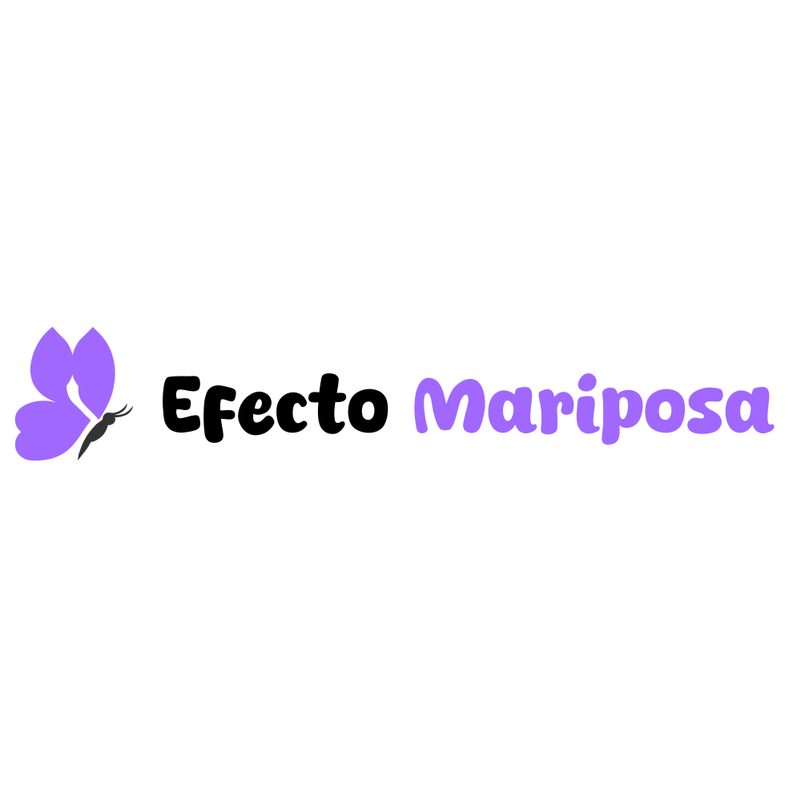
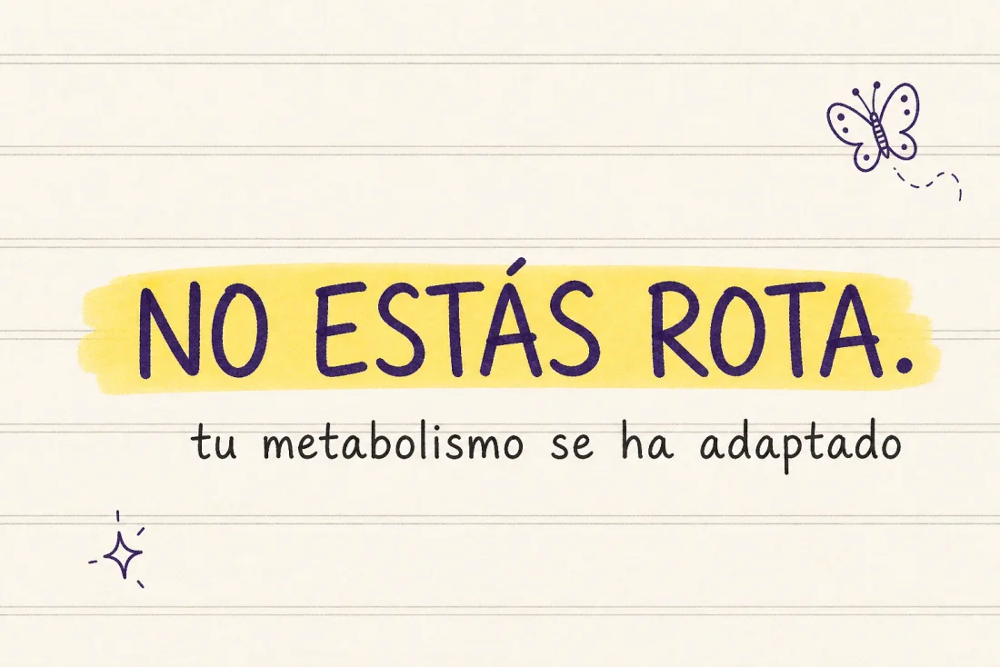

Test honesto de 2 minutos: por qué comes poco y no bajas de peso.
Comes poco. Comes «sano». Y la báscula no se mueve, o peor, sube. Y llega el pensamiento de siempre: «algo funciona mal en mí».
Para. Antes de echarte la culpa otra vez, mira los datos. Cuando pasas años con comidas muy bajas, saltándote comidas y perdiendo y recuperando peso, tu cuerpo aprende: gasta menos, guarda más y se defiende. NO ESTÁS ROTA. TU METABOLISMO SE HA ADAPTADO PARA PROTEGERTE. Y sí, se puede revertir.
Spoiler antes de empezar: la solución no es otra ensalada ni comer aún menos. Es justo al revés. Pero primero, veamos en qué punto estás.

aquí va un dibujito a mano ✏️test-no-estas-rota.webp
Marca tu respuesta en cada pregunta y yo sumo por ti ✨ (si algo falla, suma los puntos a mano y lee tu zona abajo).
1. Has hecho más de 3 dietas distintas en tu vida.
2. Has perdido peso y lo has recuperado (efecto rebote) al menos una vez.
3. Sientes que comes menos que la gente de tu alrededor y aun así te cuesta más bajar.
4. Te saltas comidas o pasas muchas horas sin comer (por falta de tiempo o para «compensar»).
5. A media tarde tienes bajones de energía fuertes y necesitas café o algo dulce para seguir.
6. Por la noche te entra ansiedad por la comida que de día controlas.
7. Te cuesta arrancar por la mañana y sientes cansancio casi todo el día.
8. Sueles tener las manos y los pies fríos.
9. Comes poca proteína (tu base son hidratos, ensaladas o «comida ligera»).
10. Duermes menos de 7 horas o duermes mal la mayoría de las noches.
11. Has estado largas temporadas en comidas muy bajas en calorías (1.200 o menos).
12. Aunque comas «bien» durante semanas, tu peso se queda estancado.
has sumado 0 puntos 💜
Tu metabolismo funciona bien. Lo que te frena no es una adaptación profunda, sino hábitos por pulir (proteína, descanso, constancia). Sigue disfrutando de tu comida, ordénala con cabeza y verás resultados relativamente rápido.
Lo que NO debes hacer: empezar a comer aún menos «por si acaso». No lo necesitas y sería el primer paso para romper lo que hoy funciona.
Llevas años en el vaivén de restricción, rebote y compensación, y tu cuerpo se ha vuelto experto en protegerse. Comer menos ya no funciona: te hunde más. Lo tuyo necesita una reprogramación de fondo (nutrición, estrés, músculo, hábitos y la parte emocional). Es más común de lo que crees en mujeres que lo han intentado todo. Y TIENE SOLUCIÓN.
Lo que NO debes hacer: buscar la próxima dieta más agresiva. Cada una te deja el metabolismo un poco más adaptado.
Sea cual sea tu número, quédate con esto: el problema nunca fue tu fuerza de voluntad. Te han dado herramientas que rompen el metabolismo en vez de repararlo... y encima te hicieron creer que era culpa tuya.
Si quieres saber cómo lo hemos hecho con cientos de mujeres que estaban justo donde estás tú hoy, perdiendo grasa comiendo lo que les gusta, sin pasar hambre y sin volver a recuperarlo, escríbeme por Instagram y te lo cuento sin compromiso.
Escríbeme por Instagram 💜mándame un dm a @ashleey.fit y dime «quiero saber más»
y vamos a por tu cambio al 100%. un abrazo, Ashley ✨